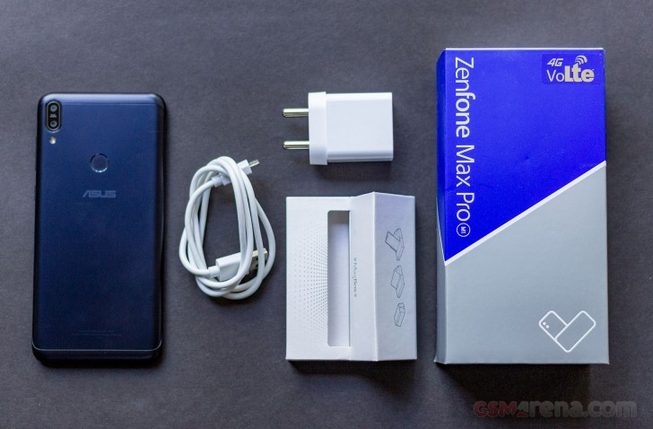

Bukan lagi smartphone setrika! Yap, mungkin hal inilah yang bisa Jaka katakan pertama kali setelah menggunakan ASUS Zenfone Max Pro M1 selama beberapa hari. Sesuai ekspetasi, smartphone terbaru ASUS ini memang menawarkan performa yang baik di kelas menengah loh.
Harga dan Spesifikasi ASUS Zenfone Max Pro M1ASUS Zenfone Max Pro M1 merupakan salah satu jajaran smartphone terbaru ASUS yang dibawa masuk Indonesia berbarengan dengan ASUS Zenfone Max M1 dan ASUS Zenfone 5Q. Menyasar pasar kelas mid-end, smartphone ini nyatanya langsung head-to-head dengan kompetitornya, Xiaomi Redmi Note 5. Menawarkan harga lebih murah, bisa dibilang keduanya menawarkan spesifikasi jeroan yang kurang lebih sama. ASUS Zenfone Max Pro sendiri dilepas di pasaran dengan harga Rp 2.299.000,-(3/32GB), Rp 2.799.000,- (4/64GB) dan Rp 3.299.000,- (6/64GB). Paket Penjualan
Harga Asus Zenfone Max Pro dijual mulai dari Rp2,3 juta (RAM 3GB), Rp2,8 juta (RAM 4GB), serta Rp3,3 juta (RAM 6GB). Unit yang saya review merupakan varian termurah yakni versi RAM 3GB (ZB602KL) dengan paket penjualan sebagai berikut: Unit Asus Zenfone Max Pro (M1) Adapter charger 2A Kabel data microUSB Silicon case SIM ejector Buku panduan dan garansi
 UI – Pure AndroidCukup mengejutkan, Asus menanggalkan antarmuka ZenUI yang kaya akan fitur. Sebaliknya, Zenfone Max Pro menggunakan pure Android versi 8.1 Oreo dengan patch keamanan bulan April 2018.Alhasil, Zenfone Max Pro menyajikan tampilan flat material design yang benar-benar apa adanya dan minim bloatware. Sisi positifnya, antarmuka polos ini berjalan ringan, performanya terasa sangat smooth secara konsisten, dan semoga saja update Android bisa datang lebih cepat. Saya pribadi lebih respect, bila Asus menggunakan ZenUI – yang telah menjadi salah satu signature dan keunggulan Asus sejak lama.
Kamera GandaSatu-satunya yang bikin kecewa pada Zenfone Max Pro versi RAM 3GB adalah kamera. Menurut saya Asus kurang transparan dalam memberikan sosialisasi terkait fitur kamera. Ya, hanya Zenfone Max Pro RAM 6GB yang dibekali kamera ganda 16-megapixel dan 5 megapixel, serta kamera depan 16-megapixel. Sedangkan varian RAM 3GB dan 4GB hanya menggunakan kamera ganda 13-megapixel (f/2.2, 1.12µm) dan 5-megapixel (f/2.4, 1.12µm) untuk menciptakan efek depth of field yang artistik, serta kamera depan 8-megapixel (f/2.2, 1.0µm). Bagaimana kualitasnya? Sebelum menuju hasilnya, mari kita mulai dari antarmuka kameranya. Asus tak mengandalkan aplikasi Pixel Master camera, tapi menggunakan Snapdragon camera. Menurut saya lebih mudah digunakan, kita bisa memilih efek dan berganti mode pengambilan gambar dengan cepat, dari mulai automatic, HDR, portrait, landscape, sports, flowers, backlight, candlelight, sunset, night, beach, dan snow. Dua fitur unggulan Zenfone Max Pro adalah mode portrait untuk mengambil foto dengan efek bokeh, subjek fokus tajam dan background menjadi kabur sehingga membuat subjek menjadi menonjol. Lalu, mode beauty dilengkapi dengan fitur live beuatification yang secara instan mempercantik foto Anda. Hasil bidikannya? Dalam kondisi outdoor dengan cahaya ideal, exposure dan warnanya terlihat bagus, mode HDR juga mampu meningkatkan dynamic range sehingga mampu menangkap detail lebih baik. Sayangnya, kualitas foto turun drastis di indoor dan lowlight, warna agak pucat dan kehilangan detail cukup signifikan, serta kinerja autofocus yang melambat. Kalau untuk perekaman videonya, Zenfone Max Pro mampu merekam dalam format 4K. Uniknya kita bisa menonaktifkan audio, cocok untuk mengambil footage video misalnya.
Seri “Max” kali ini memang sangat istimewa, karena Asus tak cuma menggulkan baterai besar tapi dapur pacu yang tangkas. Berikut susunan hardware Zenfone Max Pro. Sytem-on-chip Qualcomm Snapdragon 636 CPU Octa-core 1.8 GHz Kryo 260 GPU Adreno 509 RAM 3, 4, 6GB ROM 32/64GB Baterai non-removable Li-Po 5.000 mAh
Snapdragon 600 series ini memboyong sejumlah teknologi yang ada di premium-tier Snapdragon 800 series, menawarkan performa lebih cepat tapi tetap hemat baterai. Di Antutu, Zenfone Max Pro mencetak skor 114.129 poin, di PCMark Work 2.0 sebesar 5.891 poin dan 1.445 poin di 3DMark Sling Shot.
Mobile platform terbaru Qualcomm ini menggunakan teknologi 14mm dengan basis arsitektur core Kyro 260 performance dan efficiency. Empat core Cortex-A73 untuk performance dan empat core sisanya Cortex-A53 untuk efficiency, dengan clock hingga 1.8GHz.
CPU Kryo 260 memiliki kinerja hingga 40 persen lebih tinggi daripada generasi sebelumnya yakni Snapdragon 630. Kemampuan GPU Adreno 509 pada Zenfone Max Pro M1 meningkat cukup jauh dibanding Adreno 506 pada Snapdragon 625. Mampu menyuguhkan kinerja lebih kuat untuk bermain game.
Tiga game MOBA favorit, seperti Mobile Legends, Arena of Valor, dan Vainglory, Zenfone Max Pro sudah mampu menjalankan grafis tinggi. Bagaimana dengan game battle royalePUBG Mobile, apakah cukup untuk bermain di high graphics ultra HD? Sayangnya belum, hanya sampai pada resolusi HD dengan frame rate tinggi. Itupun menurut saya sudah mengagumkan. Lalu, saya coba bermain 4 match berturut-turut menghabiskan waktu kurang lebih 2 jam, hasilnya suhu Zenfone Max Pro tidak overheat, memang sedikit panas tapi masih dalam tahap wajar.
VerdictXiaomi killer – sangat jelas bahwa Zenfone Max Pro ditunjukkan untuk melawan Xiaomi Redmi Note 5. Mereka sama-sama menawarkan smartphone spesifikasi tinggi dengan harga kompetitif.
Zenfone Max Pro layaknya sebuah “mesin konsol” yang mampu menjalankan game-game mobile hardcore dengan optimal dalam waktu yang lama, sangat cocok buat gamer mobile. Namun dengan catatan, jangan berekspektasi lebih pada kemampuan kameranya. Sparks Chipset Snapdragon 636 yang powerful FullView display 5,99 inci rasio 18:9 full HD+ Pure Android, versi 8.0 Oreo Baterai 5.000 mAh tahan lama Slacks Body agak tebal Fokus kamera lambat di low light sehingga foto cenderung buram